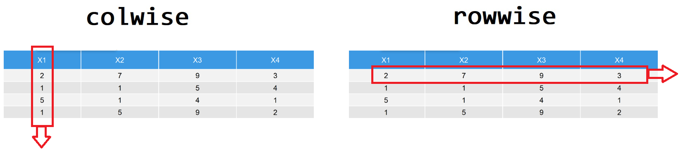

第 7 章 列方向和行方向
dplyr宏包是数据科学tidyverse集合的核心部件之一，Hadley Wickham大神说将会在5月15日发布dplyr 1.0版本，欢呼。
为迎接新时代的到来，我在线上同大家一起分享dplyr 1.0版本新的特点和功能，看看都为我们带来哪些惊喜？
7.1 体验新版本
New dplyr - 8 things to know:
- Built in tidyselect
- relocate()
- Superpowered summarise()
- colwise using across()
- cur_data() cur_group() and cur_column()
- new rowwise() grammar
- easy modeling inside dataframes
- nest_by()
7.3 summarise()更强大了
在dplyr 1.0之前，summarise()会把统计结果整理成一行一列的数据框，现在可以根据函数返回的结果，可以有多种形式：
- 长度为 1 的向量，比如，
min(x), n(), or sum(is.na(y)) - 长度为 n 的向量，比如，
quantile() - 数据框
df <- tibble(
grp = rep(c("a", "b"), each = 5),
x = c(rnorm(5, -0.25, 1), rnorm(5, 0, 1.5)),
y = c(rnorm(5, 0.25, 1), rnorm(5, 0, 0.5))
)
df当统计函数返回多个值的时候，比如range()返回是最小值和最大值，summarise()很贴心地将结果整理成多行，这样符合tidy的格式。
类似的还有quantile()函数，也是返回多个值
summarise()可以输出数据框，比如
my_quantile <- function(x, probs) {
tibble(x = quantile(x, probs), probs = probs)
}
mtcars %>%
group_by(cyl) %>%
summarise(my_quantile(disp, c(0.25, 0.75)))再比如：
dplyr 1.0 之前是需要group_modify()来实现数据框进，数据框出
dplyr 1.0 之后，有了新的方案
7.4 summarise()后的分组信息是去是留？
当 group_by()与summarise()配合使用的时候，summarise()默认会抵消掉最近一次的分组信息，比如下面按照cyl和vs分组，但summarise()后，就只剩下cyl的分组信息了。
## [1] "cyl"如果想保留vs的分组信息，就需要设置.groups = keep参数
## [1] "cyl" "vs"当然summarise()可以控制输出的更多形式
- 丢弃所有的分组信息
## character(0)- 变成行方向分组，即，每行是一个分组
## [1] "cyl" "vs"7.5 选择某列
- 通过位置索引进行选取
- 通过列名
- 通过函数选取
- 通过类型
- 通过各种组合
7.6 重命名某列
7.7 调整列的位置
我们前面一章讲过arrange()排序，这是行方向的排序， 比如按照x变量绝对值的大小从高到低排序。
我们现在想调整列的位置，比如，这里调整数据框三列的位置，让grp列放在x列的后面
如果列变量很多的时候，上面的方法就不太好用，因此推荐大家使用relocate()
还有
7.8 强大的across函数
我们必须为这个函数点赞。大爱Hadley Wickham !!!
我们经常需要对数据框的多列执行相同的操作。比如
iris %>%
group_by(Species) %>%
summarise(
mean_Sepal_Length = mean(Sepal.Length),
mean_Sepal_Width = mean(Sepal.Width),
mean_Petal_Length = mean(Petal.Length),
mean_Petal_Width = mean(Petal.Width)
)dplyr 1.0之后，使用across()函数异常简练
或者更科学的
可以看到，以往是一列一列的处理，现在对多列同时操作，这主要得益于across()函数，它有两个主要的参数：
- 第一个参数.cols，选取我们要需要的若干列，选取多列的语法与
select()的语法一致 - 第二个参数.fns，我们要执行的函数（或者多个函数），函数的语法有三种形式可选：
- A function, e.g. mean.
- A purrr-style lambda, e.g. ~ mean(.x, na.rm = TRUE)
- A list of functions/lambdas, e.g. list(mean = mean, n_miss = ~ sum(is.na(.x))
再看看这个案例
std <- function(x) {
(x - mean(x)) / sd(x)
}
iris %>%
group_by(Species) %>%
summarise(
across(starts_with("Sepal"), std)
)# purrr style
iris %>%
group_by(Species) %>%
summarise(
across(starts_with("Sepal"), ~ (.x - mean(.x)) / sd(.x))
)iris %>%
group_by(Species) %>%
summarise(
across(starts_with("Petal"), list(min = min, max = max))
# across(starts_with("Petal"), list(min = min, max = max), .names = "{fn}_{col}")
)iris %>%
group_by(Species) %>%
summarise(
across(starts_with("Sepal"), mean),
Area = mean(Petal.Length * Petal.Width),
across(c(Petal.Width), min),
n = n()
)除了在summarise()里可以使用外，在其它函数也是可以使用的
7.9 “current” group or “current” variable
n(), 返回当前分组的多少行cur_data(), 返回当前分组的数据内容（不包含分组变量）cur_group(), 返回当前分组的分组变量（一行一列的数据框）across(cur_column()), 返回当前列的列名
这些函数返回当前分组的信息，因此只能在特定函数内部使用，比如summarise() and mutate()
7.10 行方向操作
数据框中向量de方向，事实上可以看做有两个方向，横着看是row-vector，竖着看是col-vector。 
tidyverse遵循的tidy原则，一列表示一个变量，一行表示一次观察。 这种数据的存储格式，对ggplot2很方便，但对行方向的操作或者运算不同友好。比如
7.10.1 行方向上的统计
计算每行的均值，
好像不对？为什么呢？
- 按照tidy的方法
df %>%
pivot_longer(
cols = -id,
names_to = "variable",
values_to = "value"
) %>%
group_by(id) %>%
summarize(
r_mean = mean(value)
)如果保留原始数据，就还需要再left_join()一次，虽然思路清晰，但还是挺周转的。
- 按照Jenny Bryan的方案，使用
purrr宏包的pmap_dbl函数
但需要学习新的语法，代价也很高。
rowwise()
变量名要是很多的话，又变了体力活了，怎么才能变的轻巧一点呢？
rowwise() + c_across()，现在dplyr 1.0终于给出了一个很好的解决方案
这个很好的解决方案中，rowwise()工作原理类似与group_by()，是按每一行进行分组，然后按行（行方向）统计
因此，我们可以总结成下面这张图

7.10.2 行方向处理与列表列是天然一对
rowwise()不仅仅用于计算行方向均值这样的简单统计，而是当处理列表列时，方才显示出rowwise()与purrr::map一样的强大。那么，什么是列表列？
列表列指的是数据框的一列是一个列表， 比如
如果想显示列表中每个元素的长度，用purrr包，可以这样写
如果从行方向的角度理解，其实很简练
7.10.3 行方向上的建模
以cyl分组，计算每组中mpg ~ wt的线性模型的系数.
7.10.3.1 列方向的做法
分组建模后，形成列表列，此时列表中的每个元素对应一个模型，我们需要依次提取每次模型的系数，列方向的做法是，借用purrr::map完成列表中每个模型的迭代，
mtcars %>%
group_by(cyl) %>%
nest() %>%
mutate(model = purrr::map(data, ~ lm(mpg ~ wt, data = .))) %>%
mutate(result = purrr::map(model, ~ broom::tidy(.))) %>%
unnest(result)用purrr::map实现列表元素一个一个的依次迭代，从数据框的角度来看（数据框是列表的一种特殊形式），因此实质上就是一行一行的处理。所以，尽管purrr很强大，但需要一定学习成本，从解决问题的路径上也比较周折。
7.10.3.2 行方向的做法
事实上，分组建模后，形成列表列，这种存储格式，天然地符合行处理的范式，因此一开始就使用行方向分组（这里nest_by() 类似于 group_by()）
mtcars %>%
nest_by(cyl) %>%
mutate(model = list(lm(mpg ~ wt, data = data))) %>%
summarise(broom::tidy(model))至此，tidyverse框架下，实现分组统计中的数据框进，数据框输出， 现在有四种方法了
mtcars %>%
group_nest(cyl) %>%
mutate(model = purrr::map(data, ~ lm(mpg ~ wt, data = .))) %>%
mutate(result = purrr::map(model, ~ broom::tidy(.))) %>%
tidyr::unnest(result)
mtcars %>%
group_by(cyl) %>%
group_modify(
~ broom::tidy(lm(mpg ~ wt, data = .))
)
mtcars %>%
nest_by(cyl) %>%
summarise(
broom::tidy(lm(mpg ~ wt, data = data))
)
mtcars %>%
group_by(cyl) %>%
summarise(
broom::tidy(lm(mpg ~ wt, data = cur_data()))
)
# or
mtcars %>%
group_by(cyl) %>%
summarise(broom::tidy(lm(mpg ~ wt)))